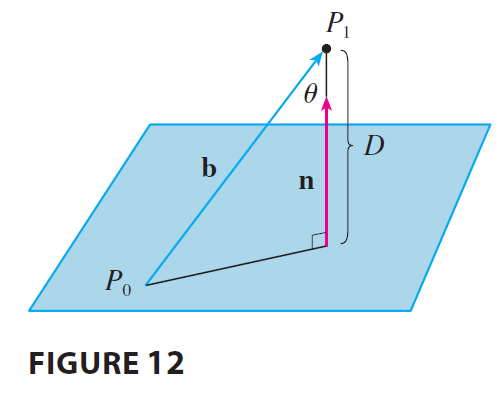

EXAMPLE 8 Find a formula for the distance \(D\) from a point \(P_1(x_1, y_1, z_1)\) to the plane \(ax + by + cz + d = 0\).

SOLUTION Let \(P_0(x_0, y_0, z_0)\) be any point in the given plane and let b be the vector corresponding to \(\vec{P_0P_1}\). Then \[ \mathbf{b} = \langle x_1 - x_0, y_1 - y_0, z_1 - z_0 \rangle \] From Figure 12 you can see that the distance \(D\) from \(P_1\) to the plane is equal to the absolute value of the scalar projection of b onto the normal vector \(\mathbf{n} = \langle a, b, c \rangle\). Thus \[ D = |\text{comp}_\mathbf{n}\mathbf{b}| = \frac{|\mathbf{n} \cdot \mathbf{b}|}{|\mathbf{n}|} = \frac{|a(x_1 - x_0) + b(y_1 - y_0) + c(z_1 - z_0)|}{\sqrt{a^2 + b^2 + c^2}} \] \[ = \frac{|(ax_1 + by_1 + cz_1) - (ax_0 + by_0 + cz_0)|}{\sqrt{a^2 + b^2 + c^2}} \] Since \(P_0\) lies in the plane, its coordinates satisfy the equation of the plane and so we have \(ax_0 + by_0 + cz_0 + d = 0\). Thus the formula for \(D\) can be written as \[ D = \frac{|ax_1 + by_1 + cz_1 + d|}{\sqrt{a^2 + b^2 + c^2}} \tag{9} \]
EXAMPLE 9 Find the distance between the parallel planes \(10x + 2y - 2z = 5\) and \(5x + y - z = 1\).
SOLUTION First we note that the planes are parallel because their normal vectors \(\langle 10, 2, -2 \rangle\) and \(\langle 5, 1, -1 \rangle\) are parallel. To find the distance \(D\) between the planes, we choose any point on one plane and calculate its distance to the other plane. In particular, if we put \(y = z = 0\) in the equation of the first plane, we get \(10x = 5\) and so \((\frac{1}{2}, 0, 0)\) is a point in this plane. By Formula 9, the distance between \((\frac{1}{2}, 0, 0)\) and the plane \(5x + y - z - 1 = 0\) is \[ D = \frac{|5(\frac{1}{2}) + 1(0) - 1(0) - 1|}{\sqrt{5^2 + 1^2 + (-1)^2}} = \frac{|\frac{3}{2}|}{\sqrt{27}} = \frac{3}{2\sqrt{27}} = \frac{3}{6\sqrt{3}} = \frac{\sqrt{3}}{6} \] So the distance between the planes is \(\sqrt{3}/6\).